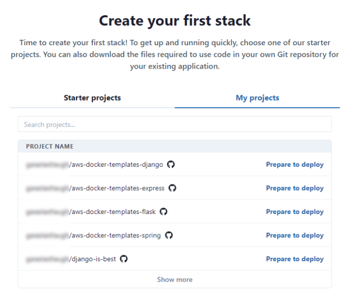
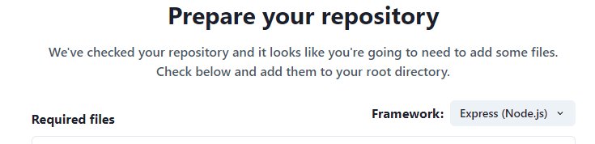
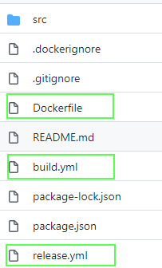

Deploy an Existing Application
In our guide to creating your first stack, we showed you how to launch one of our sample applications as a fully scalable deployment on the cloud. But it's just as easy to package and deploy an existing application!
Prerequisites
You will need the following resources set up before you start using TinyStacks:
- A Git account with either GitHub or GitLab.
- An AWS account. All of the resources TinyStacks creates for you will be hosted in an AWS account that you own. Don't worry - you cna get started without any previous knowledge of AWS!
Configure Git connection
When you first log in to TinyStacks, you’ll need to wire up a supported Git repository account as well as an AWS account. TinyStacks supports using Git repositories hosted on GitHub or GitLab.

Select which Git service you plan to use: GitHub or Gitlab. A separate window will open. If you are not logged in to your selected service, you will be prompted to log in now.

Once logged in, you will need to grant authorization for TinyStacks to access your GitHub or GitLab account. This will allow us to add a repository to your account (if you use one of our starter projects) or read an existing repository (if you use your own project).
Configure AWS account
Once you've authorized your Git account, you will be prompted to authorize an AWS account. This account will host all of the cloud resources required by your application.

If you have not logged in to your AWS account recently, you will be prompted to do so.
Once you have logged in to AWS, you will see the following screen, which prompts you to create an AWS CloudFormation stack in your AWS account. This step is necessary in order to proceed and fully connect your account. This CloudFormation template will create an AWS Identity and Access Management (IAM) role that TinyStacks will assume in order to create resources in your account.

(Note: Some elements of the screen above have been blurred out for security reasons.)
To create this stack, select the box I acknowledge that AWS CloudFormation might create IAM resources. Then, click the Create Stack button.
After creating the stack, tab back to the previous tab containing the TinyStacks window. Once the stack has completed creating, TinyStacks will automatically detect this and move you to the next step in the stack creation process. Once you see the screen below, you can proceed.

Create a new stack
Next, you'll be prompted to select a project. You can either select a TinyStacks starter project or use your own project. For this guide, we'll be using your own project.
Select My projects. You should see a list of all of the repositories available in your Git account. Find the repository whose code you are going to deploy and click Prepare to deploy.

You should now be on the Prepare your repository page.
Check the deployment template files into your Git repository
When you choose to deploy code from an existing repository, TinyStacks checks your repo to see if it contains three files:
- A
Dockerfile. This file contains the instructions for preparing your Docker container, which will run your application code. Your container will need to contain your application framework (Express, Flask, Django, etc.), as well as any configuration files and environment variables necessary to run your application. - A
build.ymlfile, which AWS CodeDeploy will use to create the latest version of your Docker container and store it in an Amazon Elastic Code Repository (ECR) repo in your AWS account. - A
release.ymlfile, which AWS CodeDeploy will use to run your Docker container on an Amazon Elastic Container Service (ECS) cluster hosted in your AWS account.
For more details on the elements of a TinyStacks deployment, see our architecture page.
Note: If your app is already Dockerized (has a Dockerfile), you do not need to replace it with our Dockerfile. We only provide a Dockerfile for the benefit of teams who have no yet containerized their applications.
Since your Docker container must contain the framework required by your application, it's important that you click the Framework dropdown and select whatever framework your application uses. This will ensure that the Dockerfile that you download can successfully run your application.

Once you've selected the correct framework, click download all files at the bottom of the page to download all three files as a zip file. Unzip this file and check in all of the missing files for your application to the root of your repository.
The root directory of your repo should look something like the example below after you are done:

(Note: This example is for an Express app - your project may have different files if it is using a different framework. The important thing is that these three files are checked into the root of your repository.)
Once you are done, click Next.
Name your project and select the deployment branch
Next, give your project a name. Since this name will be used as a prefix for many of your AWS resources, keep it to 20 characters or less.
You will also need to select a deployment branch. This is the branch of your Git repository on which new check ins will trigger a new deployment.

There are two other settings on this page you can optionally configure:
- Port: If the application in your Docker container is using a port other than the default (80) to serve traffic, enter it here.
- Custom health check: AWS services such as Application Load Balancer use health checks to determine if an instance of your application is running correctly. Instances that fail a health check are destroyed and replaced with healthy instances. By default, Tinystacks uses the endpoint
/pingto check application health. If you use a different endpoint, specify it here.
When you're done, click Next.
Finalizing deployment options
On the next screen, you will be asked to review your infrastructure before launching your application on TinyStacks. Click Review infrastructure to see the infrastructure that TinyStacks will create in your AWS account and to set any additional options.
The options on this page are the same ones discussed in the guide to creating your first stack. Please review that document for a full description of the available options.
For users launching an existing application, the Review Infrastructure page is a good time to consider what runtime configuration your application requires to run successfully. In particular, you should consider:
- Data storage. You can create a new Postgres database in the Databases tile. If you need to use a different database, you can create or import an existing database into an Amazon RDS instance and then select it on this screen.
- Environment variables. If you're using a database outside of AWS or need to specify additional configuration information for your application, use the Environment Variables link on this page to define simple name-value pairs. These variables will be exposed as Linux environment variables to your application running in its Docker container.
Once you're ready, click the Build button to build your Docker container and deploy it to AWS.
Testing your stack
Your stack will take a few minutes to build. Once it's done, you'll be taken to the Stacks page on your TinyStacks account, where you can see your running stack listed.

Click on your stack's name to navigate to the Stack Details page.

This page shows your stack and all of the stages you've defined. The initial stack creation process creates a single stage named dev. You can use the Add stage button to add more stages at any time.
For now, let's tets out the dev stack and ensure it's working. On the lower right corner of the dev box, click Copy endpoint.
You can use this base URL to access a valid page or REST API call in your application. If everything is configured correctly, you should see your application return an appropriate response to your request.
Properly containerizing your application
By following the steps above, your application should deploy and run in the cloud. However, you may notice some issues running your code if you haven't prepared your application to run in a container.
As explained in our architectural overview, a Docker container is a virtualized operating system that contains all of the executable files, scripts, shared libraries, configuration files and other dependencies required for your application to run. In order to scale your application to handle upwards of millions of requests, your AWS account will need to run multiple copies of this container across multiple virtual machines.
If your application has been designed as a monolithic application, it may make certain assumptions about its runtime environment that won't hold true after your application is containerized. If you are seeing errors or strange behavior in your application, here are a few things to consider.
Filesystem storage
Each running Docker container instance has its own virtualized filesystem. Data written to this filesystem in one running container instance won't be visible to other running instances. Ensure that any data that all container instances must access is written to a shared location - e.g., a database, a cloud storage service like Amazon S3, or an in-memory cache server like Amazon ElastiCache.
Configuration
Each running container instance will need its own copies of whatever configuration files your application might need. If you need to update any of these configuration files, you will need either to push changes through Git, or store the configuration in a location that all of your running container instances can access dynamically (such as Amazon S3).